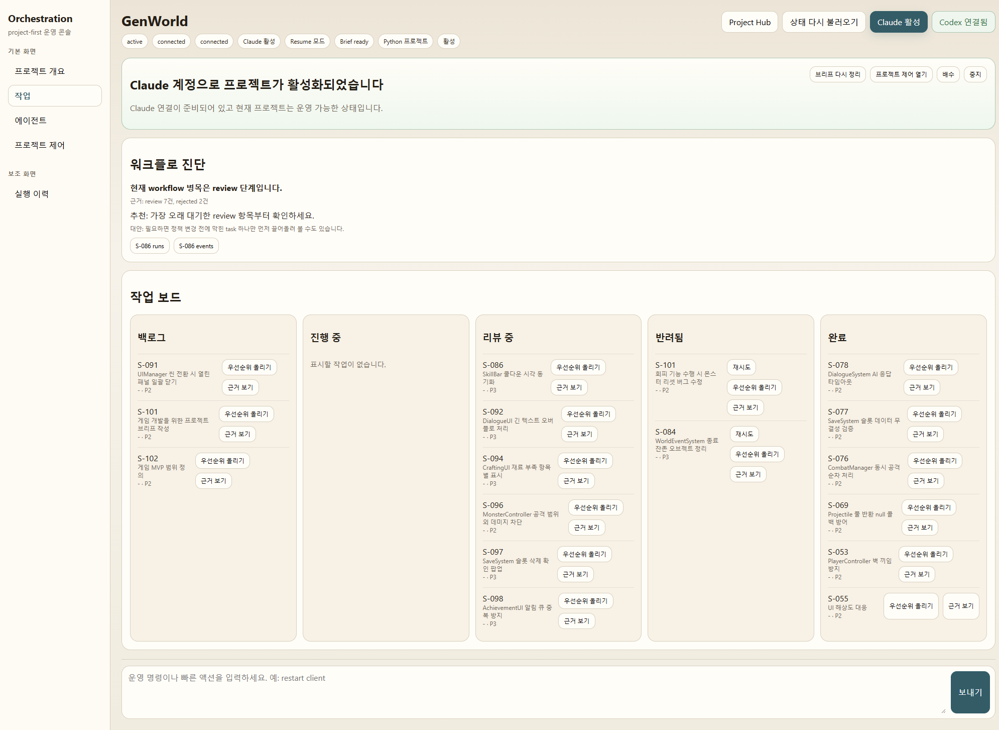
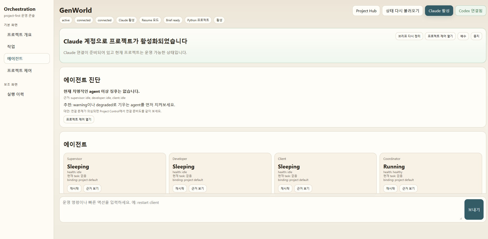

대표 프로젝트
대표 프로젝트와 기반 경험 대표 프로젝트와 기반 경험 문제를 풀어 온 흐름
최근 프로젝트는 AI 협업 적용을, 기반 경험은 그 이전부터 쌓인 실무 기반을 보여 줍니다.
Featured Projects




Unity 문제 영역
XR 제어, 에디터 툴링, BIM 시각화, AI 런타임처럼 Unity로 다뤄 온 문제 영역입니다.
01
Unity XR · Real-Time Control
XR 입력, IK, 외부 장치 통신을 실시간 제어 구조로 연결해 온 영역입니다.
VR 로봇 원격 조종
IK Meta
런타임 IK, UDP 통신, 모션 기록, 보정 로직
02
Unity Editor Tooling · Authoring Systems
Unity Editor를 제작자용 저작 도구와 검수 가능한 운영 구조로 확장해 온 영역입니다.
DXCenter
eGuide 계열
EditorWindow 기반 구조, 저작 Wizard, 검증기, EventBus, ServiceLocator
03
Unity BIM · Engineering Visualization
대용량 BIM·토목 데이터를 실시간 탐색과 설계 검토 도구로 바꿔 온 영역입니다.
WatchBIM
횡단면 · 클리핑 도구
로더, 횡단면 생성, 클리핑, 수직 차트 도구
04
Unity XR Experience · AI Pipeline
XR 체험 흐름 안에 음성, Flask, 생성형 AI, 환경 생성 파이프라인을 통합한 영역입니다.
너스탤지아
Youstalgia
체험 시퀀스, Flask 연동, Skybox 생성, 모델 관리
05
Unity Game Systems · AI Runtime
게임 런타임 시스템 위에 NPC 상태, 기억, 대화, fallback 구조를 얹어 AI를 실제 플레이 흐름 안에서 검증한 영역입니다.
GENWorld
Local LLM R&D
NPC 상태 관리, 프롬프트 구성, 대화 제어, 퀘스트와 스킬 시스템
Foundation Projects
지금의 작업 방식은 아래 경험들 위에서 만들어졌습니다.
01

고속도로 BIM 3D 시각화 + 설계 자동화
대용량 데이터 처리 · 최적화 · 설계 자동화
기반 경력
02

VR/AR 안전교육 시뮬레이션
현장형 XR · 하드웨어 연동 · 납품형 완성도
기반 경력
03

교육용 게임 및 서비스형 콘텐츠
교과 연계형 모바일 게임 · Android · 6개 구역 · 120단계
기반 경력
04

DXCenter + Unity Editor Tooling
에디터 · 운영 도구 · 제작 병목 감소
기반 경력